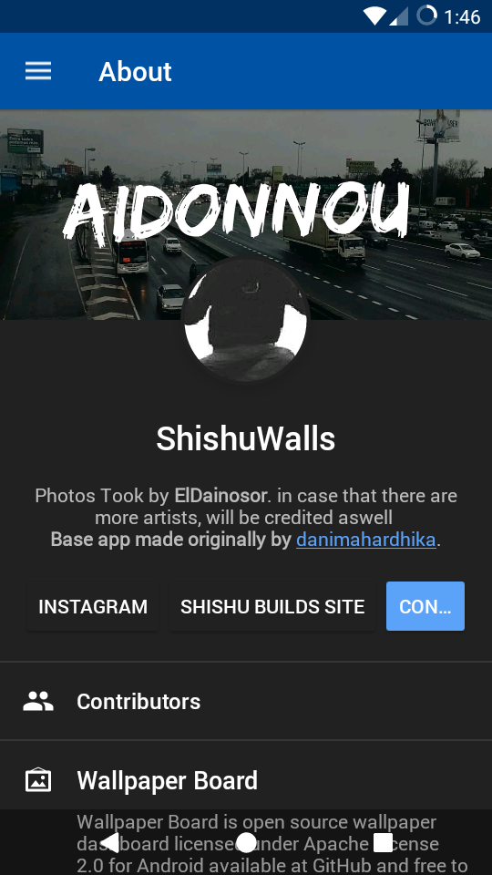
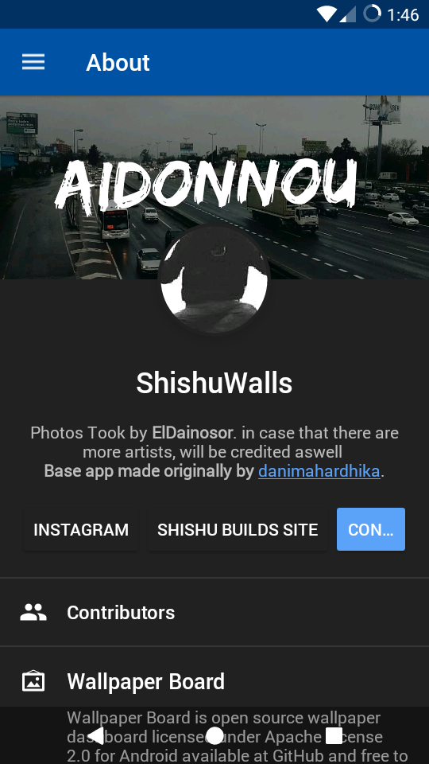
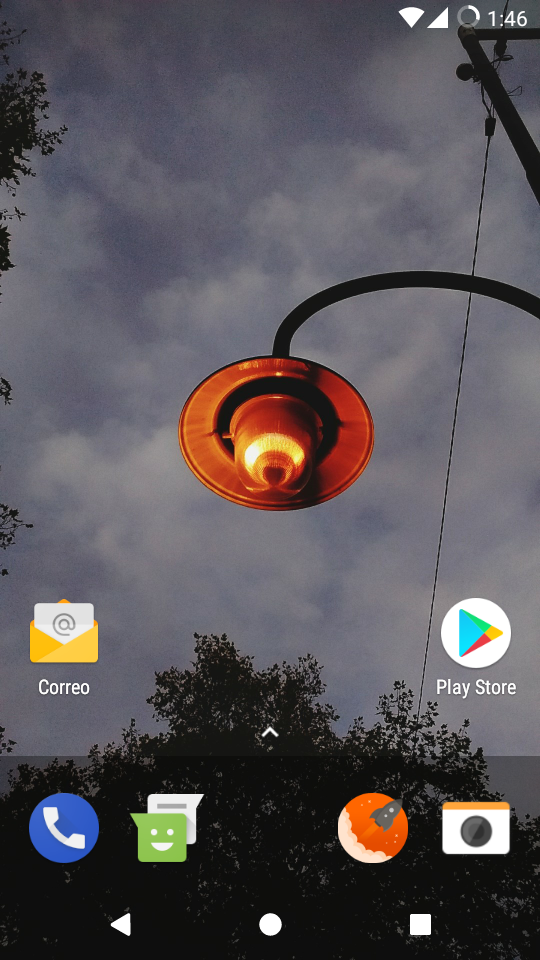
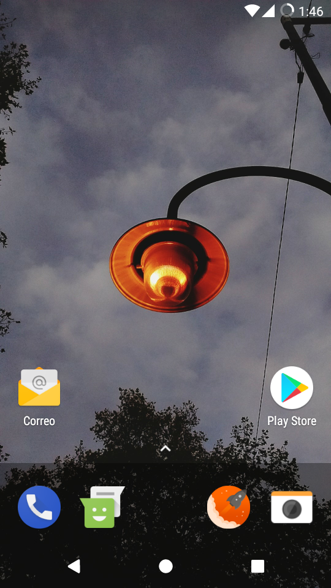

Para tener un fondo diferente
Disfrutá de una app llena de fondos interesantes hechos con fotografías que se tomaron con un Moto E 2015. No importa si estan sin filtro o editadas, lo importante es que lucen excelente como fondo de pantalla.
 

 
